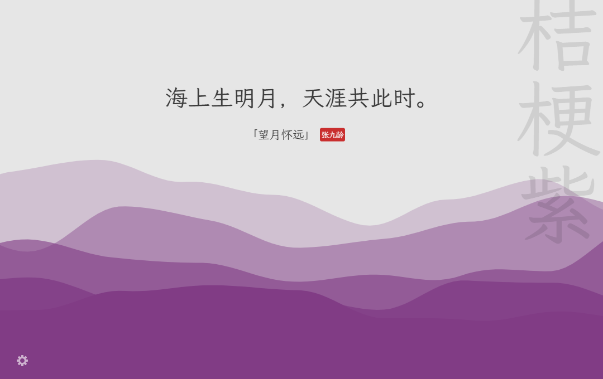
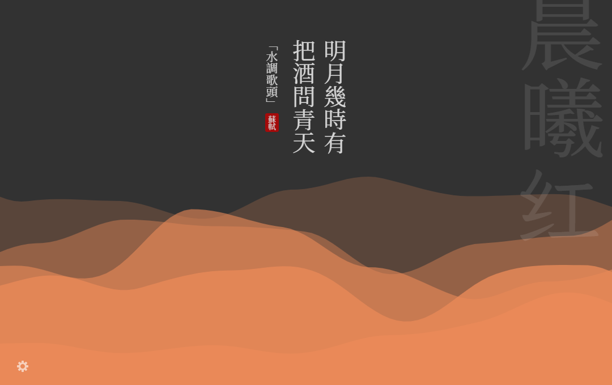
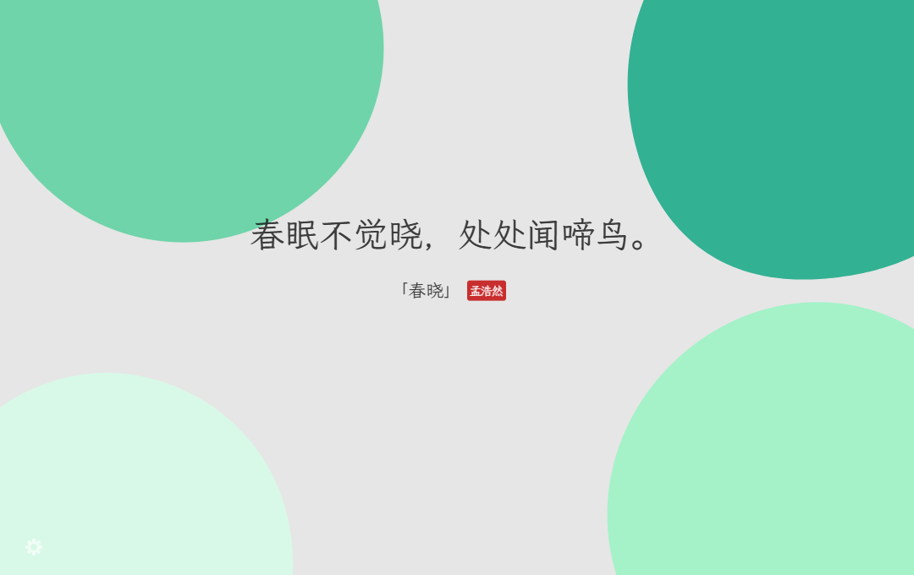
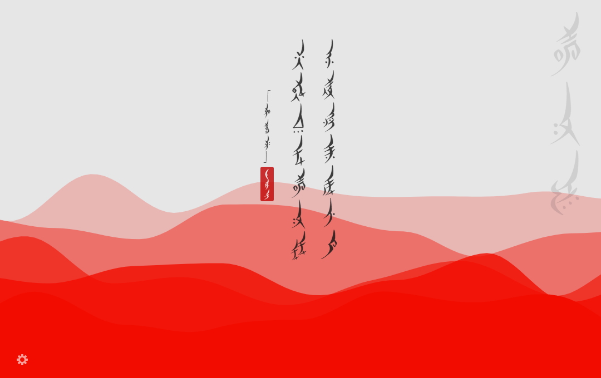
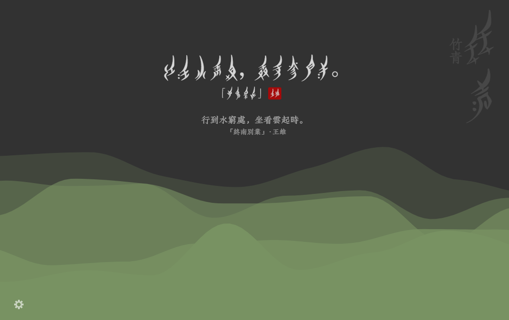
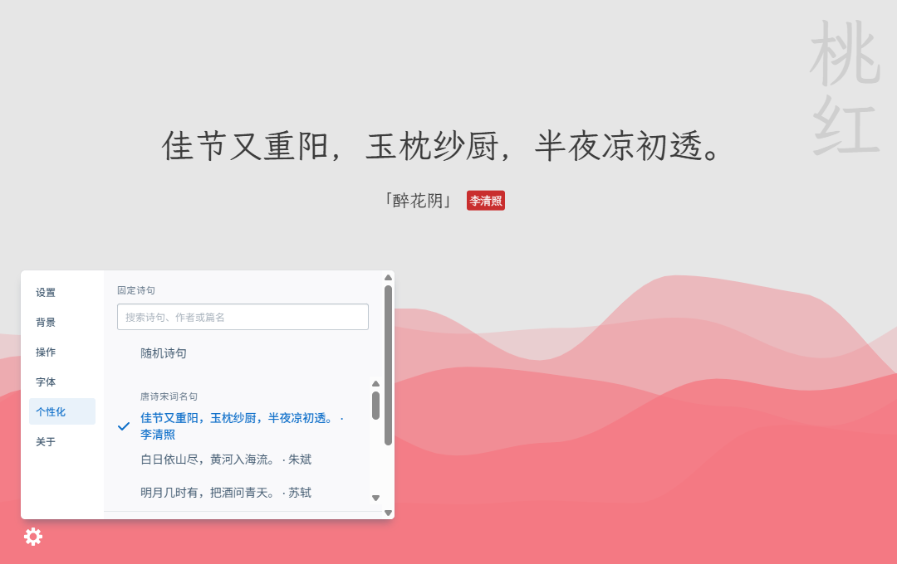
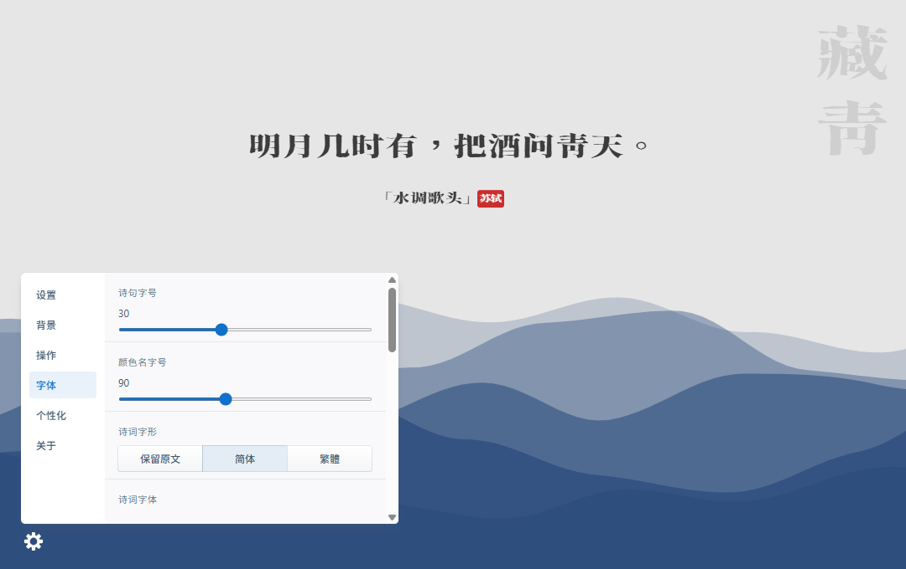

随手翻到的诗
8,501 条诗句，断网也能读。任它随机翻过，或按诗句、作者、篇名寻来；遇到喜欢的，就留在这一页。
古诗词 · 中国传统色
开一页，见几枝。
海上明月，庭前疏影。读过的诗句，有时会在意想不到的时候想起。几枝把它们放在新标签页里，伴着缓缓流动的中国传统色。
这是基于原版几枝制作的非官方增强版。诗句、配色与字体均可离线使用，也可以留下自己偏爱的一句。

诗与颜色之间
8,501 条诗句，断网也能读。任它随机翻过，或按诗句、作者、篇名寻来；遇到喜欢的，就留在这一页。
水色、竹青、藕荷……658 种传统色，各有名字。可以看层叠的波浪，也可以换成 Blobs 泡泡；昼夜与动静，随你选择。
同一句诗，换一种字迹，又有不同的意趣。内置多款字体，可用简体或繁体、横排或竖排，也可试试女书凤栖，旁附汉字原文。
需要时，打开搜索框，放上常去的几个网址。想留住眼前的颜色，也可以保存一张背景图。
下载与安装
v2.5.2 正式版已发布。请选择对应浏览器的安装包，然后按下方步骤安装。
Firefox 当前提供未签名的 ZIP 安装包，需要临时加载。重启浏览器后须重新加载。
查看完整发布说明 ↗上架后将在这里补充商店链接。目前仅作占位，暂不可点击安装。
扩展管理页面
chrome://extensions/
edge://extensions/about:debugging#/runtime/this-firefox需要 Node.js 24 和 npm 11。在项目目录执行：
npm ci --legacy-peer-deps --ignore-scripts
npm run build:all
npm run verify:builds
npm run lint:firefox安装包位于 builds/：chrome.zip、edge.zip 与 firefox.zip。
使用指南
打开齿轮菜单中的“个性化”，搜索诗句、作者或篇名，也可以选择推荐名句。选回“随机诗句”即可恢复轮换。
波浪有许多传统底色可选，喜欢哪一种，就让它慢慢流动。切到 Blobs 泡泡背景，点击背景还可以添上新的泡泡。
在“背景”中选择波浪或 Blobs、昼夜主题与动静设置。在“个性化”中选择传统色，或自定义波浪底色与名称。选回“随机”即可恢复颜色轮换。
在“字体”中选择内置字体与字形，分别调整诗句和色名的字号。女书凤栖可附带汉字原文；缺少女书字形的字会以汉字显示。
在“设置”中开启“显示常用网址”，最多可添加 8 个地址。悬停或聚焦卡片后，通过菜单编辑或移除。网址保存在当前浏览器，关闭后重新开启会恢复。






如果你也喜欢几枝，可以到 GitHub 看看源码、翻翻更新记录。遇到问题，或有新的想法，也欢迎留下 Issue。
诗句与颜色历史、固定选择和常用网址保存在当前浏览器，不会自动跨浏览器或设备同步。
不是。这是基于 Unicar 及其贡献者开发的几枝制作的非官方增强版。原版的商店入口不是本增强版的下载链接。
原版几枝 ↗感谢原版几枝贡献者，以及诗词、传统色与字体资源的维护者。完整鸣谢与数据来源见项目仓库。